El Centro Ceremonial Otomí se encuentra edificado sobre una superficie de 50 hectáreas, en una montaña llamada Cerro de la Catedral, en Temoaya, Estado de México, en medio del Bosque Otomí-Mexica. Este predio es un parque estatal de 2 mil hectáreas que es hogar de venados cola blanca y cuenta con presas y lagos. El objetivo de este recinto es ofrecer a las comunidades otomís aledañas un espacio para realizar ceremonias y rituales religiosos, ya que éstos continúan siendo parte de sus costumbres y vida cotidiana. |
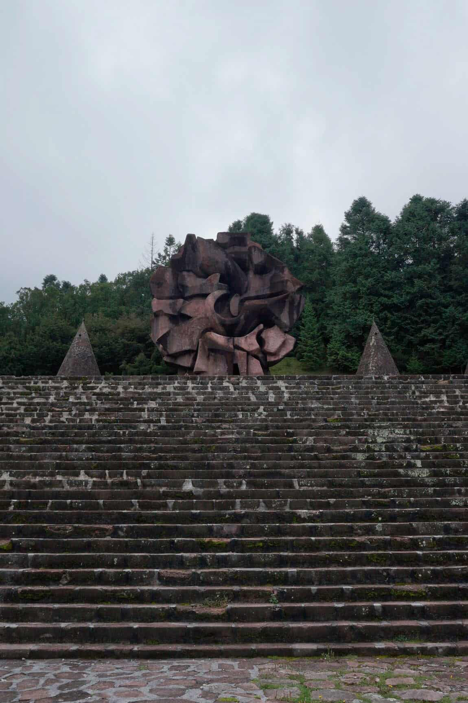 | Si quieres presenciar alguna ceremonia ancestral, debes acudir al Centro Ceremonial Otomí cada primer domingo de mes. En los rituales sagrados, los ancianos y autoridades religiosas honran a los cuatro elementos naturales: fuego, agua, aire y tierra, así como a los dioses plasmados en el lugar. También podrás disfrutar de las áreas verdes, hacer un pícnic e incluso acampar. Además, en las inmediaciones se encuentra una Escuela Agropecuaria, un museo y una Escuela de Artesanías. Todos estos lugares fueron fundados por integrantes de la etnia otomí El clima se caracteriza por ser templado-frío, así que recuerda llevar un suéter o chamarra en tu visita. Si tienes suerte, en el bosque podrás avistar fauna silvestre como ardillas, tuzas, conejos, venados y borregos. También hay un estanque donde se crían truchas, gansos y patos. |
|---|
| Ve al quiosco a saborear una rica nieve o ser espectador de algún evento cultural. Los fines de semana las calles de Tepotzotlán se tapizan de mercaditos, puestos de comida, de tapetes y de pinturas para descubrir la diversidad cultural de este lugar. Este Pueblo Mágico posee la joya del churrigueresco mexicano: El Museo Nacional del Virreinato, contruido en 1580 como el Colegio Jesuita de San Francisco Javier. Destacan por su riqueza el altar principal de la capilla, la iglesia de San Francisco Javier y la iglesia de San Pedro Apóstol de estilo neoclásico, sin olvidar la importante colección museográfica al interior. No se te vaya a pasar la vista desde su mirador. Muy cerca del museo no se te pase visitar el imponente Acueducto de Tepotzotlán que cuenta con cuarenta y tres arcos y 438 metros de altura | 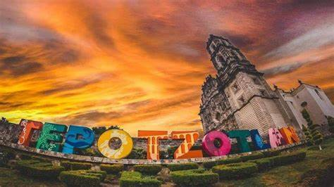 | ATRACTIVOS -Acueducto de Tepotzotlán, Arcos del sitio, o arcos de Xalpa -Cañada de Cisneros -Ex Convento de San Francisco Javier -Iglesia de San Francisco Javier -Iglesia de San Pedro Apóstol -Museo Nacional del Virreinato -Parque Estatal Sierra de Tepotzotlán -Parque Xochitla -Plaza de las Artesanías -Plaza de la Cruz -Parroquia de San Pedro Ápostol |
|---|
| El Oro fue declarado Pueblo Mágico en el año 2011 gracias a su rol importante en la historia de México, reconocido como una de las antiguas glorias mineras del país. Conocer el Oro es como un viaje hacia atrás en el tiempo, sus calles empedradas y arquitectura se combinan de tal manera que logran escenarios de antaño y son el claro fruto de la influencia europea atraída por el esplendor minero de la época Con edificaciones destacadas, el recorrido por el centro es muy ameno, sus calles te van llevando a descubrir un poco más de su historia. El Palacio Municipal es uno de los sitios más imponentes del destino, su fachada es muy bonita y te invita a tomar las mejores fotos. Arquitectura neoclásica y art nouveau son parte de su atractivo, además, si te interesa conocer un poco de historia, puedes ingresar y recorrerlo, allí descubrirás el mural llamado Génesis Minero, una descripción gráfica de El Oro en su esplendor y llega hasta la terraza, te sorprenderás con vistas únicas del pueblo | 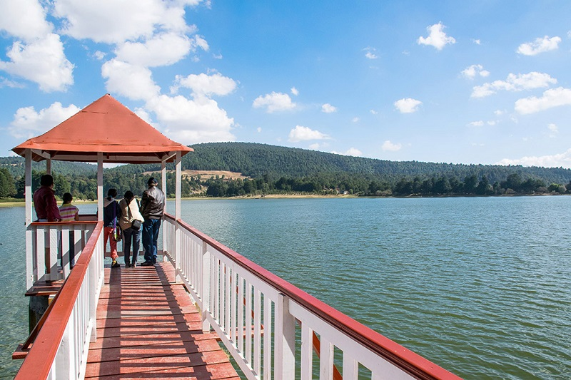 | DISFRUTA LAS AREAS naturales La belleza del destino no termina en sus lugares llenos de historia y excelente gastronomía, también tiene algunas atractivas actividades para disfrutar de la naturaleza. La Presa Brockman, un sitio fascinante, rodeado de verde y un ambiente de paz que realmente se disfruta. Para pasar un lindo día puedes pasear por el lugar, visitar los puestos de artesanías, animarte a recorrer la presa en un bote a pedal o si tienes más condición, uno de remo, otra buena idea es hacer senderismo por el bosque y llegar hasta la vecina Presa Victoria. Además, cuenta con otras instalaciones y también hay cabañas para quienes eligen disfrutar más tiempo de calidad en este hermoso lugar, una noche llena de estrellas puede ser la excusa perfecta. |
|---|
| Aculco combina maravillas, como un Santuario natural con una caída de 15 metros que humedece enormes columnas basálticas, con la magnífica arquitectura tradicional, y emprender diversas aventuras en sus atracciones naturales para practicar el campismo, el rapel o el senderismo Se ubica a 2,400 m de altitud; posee un agradable clima de montaña; fresco, en ocasiones semifrío y subhúmedo, posee una temperatura promedio de 14º C, llueve buen parte del año. Es una sierra donde abundan lomas, sierras, valles y algunas cañadas que dan cauce a cascadas y ríos. En este lugar en el subsuelo se encuentran dos tipos de aguas la dulce y la salada. La cocina local ofrece al visitante las enchiladas aculquenses, barbacoa, carnitas, mole; o bien escamoles, cremas, y quesos. Como postres figuran dulces de leche, jamoncillos y panadería. Como bebidas encuentras agua de frutas, curados de pulque, y diversos licores. | 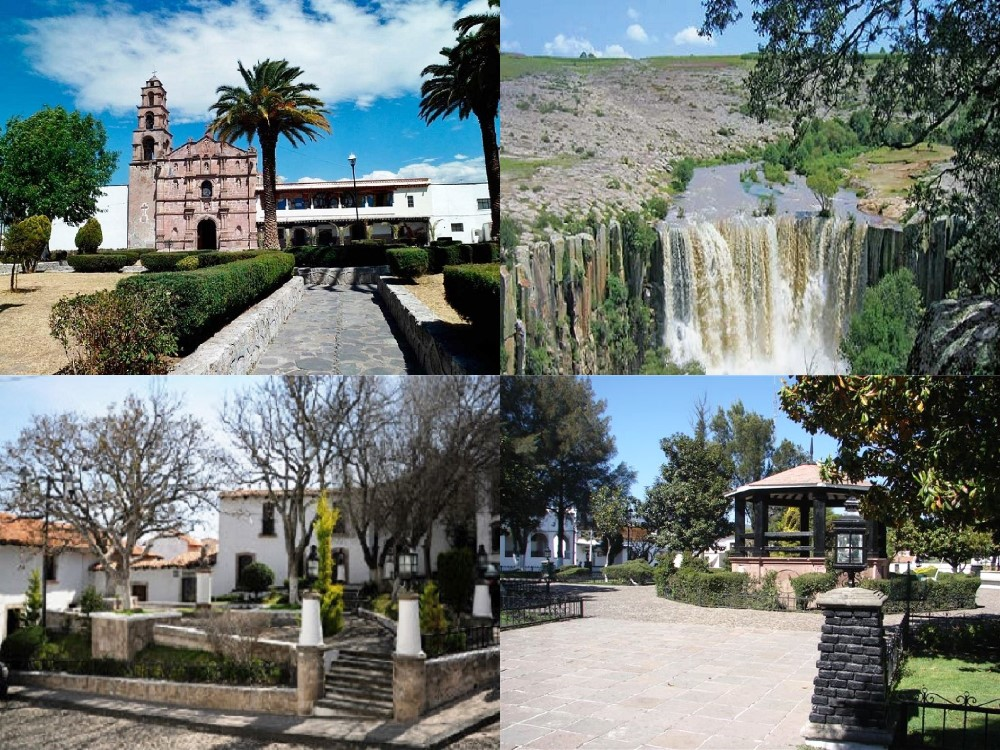 | ATRACTIVOS -Balneario municipal -Casa de Cultura -Casa Hidalgo -Cascada La Concepción -Cascada Tixhiñu -Hacienda Arroyo Zarco -Hacienda Ñadó -Jardín Principal -Lavaderos Públicos -Peña y Presa de Ñadó -Parroquia y Ex Convento de San Jerónimo -Puente Colorado -Santa Ana Matlavat -San Lucas Totolmaloya -Santuario del Señor de Nenthé |
|---|
| Las artesanías en Ixtapan de la Sal se entrelazan con la rica historia y cultura de la región, dando vida a una amplia variedad de productos únicos y auténticos. Con 936 artesanas y artesanos de diversas ramas artesanales. Entre las que más destacan en alfarería y cerámica, cartonería y papel, madera, fibras vegetales y gastronomía. Cuenta con un mercado de artesanías y suvenires en el que podrás encontrar productos de alfarería, madera en la sub rama talla como collares, pulseras y juguetes tradicionales. Elaboran dulces tradicionales elaborados con recetas ancestrales endulzan los paladares de lugareños y visitantes por igual, como es el pipían de calabaza. La madera también se convierte en arte en manos de los artesanos de Ixtapan de la Sal. | 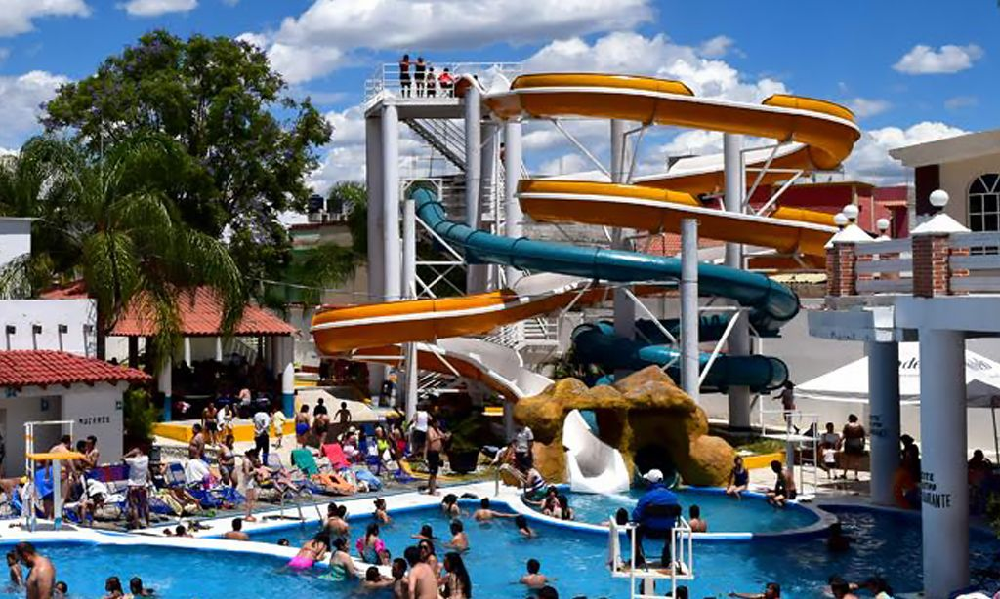 | La Colonia Centro resguarda las joyas coloniales más importantes del municipio. Como distintivo principal destaca la Parroquia de la Asunción de María y el Santuario del Señor del Perdón con su atrio de almenas. El jardín central con su quiosco herrado, el edificio que alberga la presidencia municipal de estilo neoclásico con acabados en cantera rosa, la fuente-monumento a los Mártires del 10 de agosto, el edificio que alberga la escuela primaria Horacio Zúñiga y las casas de estilo colonial sobre las calles Ignacio Allende, 16 de Septiembre y Javier Mina. Debido a la benignidad de su clima, con una temperatura promedio de 26 grados Celsius, y por sus manantiales de aguas termales con propiedades curativas, este lugar de tranquilidad provinciana, ha sido sitio propicio para el desarrollo de balnearios que cuentan con modernas instalaciones |
|---|
| El Cerro de los Ídolos resguarda la zona arqueológica de Malinalco, una de las más bellas del estado y desde donde se aprecia una magnífica panorámica del pueblo. Ahora que si además de cultura buscas mejorar tus “Aces” y “Birdies” en el club de golf encontrarás un espacio de nivel PGA En la cocina local encontrarás tacos de cecina con chorizo, o trucha a la Malinalco, si te gusta experimentar puedes probar el caldo de iguana o tamales de rana; todo elaborado con tiritas de nopal, cebolla, papas fritas y su salsa molcajeteada de tres chiles, acompañado por supuesto de un vaso de pulque o mezcal de la zona. | 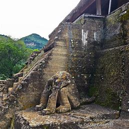 | ATRACT9IVO -Bicicleta de montaña -Capilla de Santa Mónica -Centro -Club de Golf Malinalco -Escalada -Ex Convento Agustino -Galería de Andrés Medina -Centro ceremonial Cuauhtinchán -Galería Tlakuikani -Gastrotour Prehipánico de Malinalco -"Los Diablitos" -Museo Doctor Mario Schneider -Museo vivo los Bichos -Parapente -Parroquia del Divino Salvador -Rappel -Santuario del Señor de Chalma -Tenis -Tianguis de los miércoles -Tirolesa -Vinoteca Má-Li -Zona Arqueológica Cuauhtinchán -Festividades: |
|---|
| Este pueblo conserva sus calles empedradas con casas de colores y techos de teja. La Iglesia del Calvario vigila desde lo alto, rodeada por palmeras y magueyes. Abajo se alza su plaza con la mítica Tlanchana, así como varias tiendas de artesanías, museos y restaurantes Destacan los Árboles de la Vida, cuyo trabajo y nivel de detalle es exquisito y admirado a nivel mundial. El Museo del Barro exhibe las piezas que han ganado concursos de alfarería a nivel nacional e internacional. En el Mercado Artesanal venden catrinas, soles, lunas, sirenas, cazuelas y macetas. | 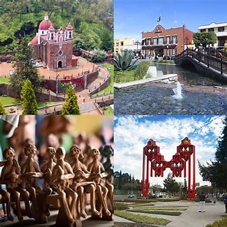 | IGLECIA DEL CALVARIO Fue construida a finales del siglo XVIII en honor a la Virgen de los Dolores. Se alza en lo alto del Cerro de los Magueyes, por lo que se debe subir una larga escalinata rodeada por jardines y palmeras para llegar a su atrio. Desde ahí tendrás la mejor vista de Toluca, Metepec y los alrededores, en especial al caer la noche. PARQUE AMBIENTAL BICENTENARIO Es la plaza principal, donde sobresale un quiosco octagonal y fuentes danzarinas que se iluminan al caer la noche. En dicha fuente se encuentra una sirena de barro, mejor conocida como la Tlanchana, a quien se veneraba para tener buenas cosechas. Alrededor hay múltiples locales, el Palacio Municipal y un monumento dedicado a Benito Juárez MUSEO DEL BARIO Inaugurado en 2012, este moderno recinto reúne las artesanías de Metepec que han sido galardonadas a nivel nacional e internacional. Destaca la colección de miniaturas, donde se observan obras creadas en barro con sumo detalle y de apenas unos centímetros de alto, así como los árboles de vida, catrinas y objetos que representan festividades y momentos típicos del pueblo. |
|---|
| La zona arqueológica cuenta con baños públicos, tiendas de artesanías y de souvenirs y un vehículo que realiza un recorrido por el interior de la zona arqueológica, perfecto para moverte de un sitio a otro. Una vez que pagues el ticket podrás subirte todas las veces que quieras. También hay un servicio de guías locales expertos. Hablan varios idiomas y te darán una visión más completa de la zona. Si no quieres ir acompañado de un guía en muchos puntos de interés hay láminas con explicación y datos esenciales que debes conocer. | 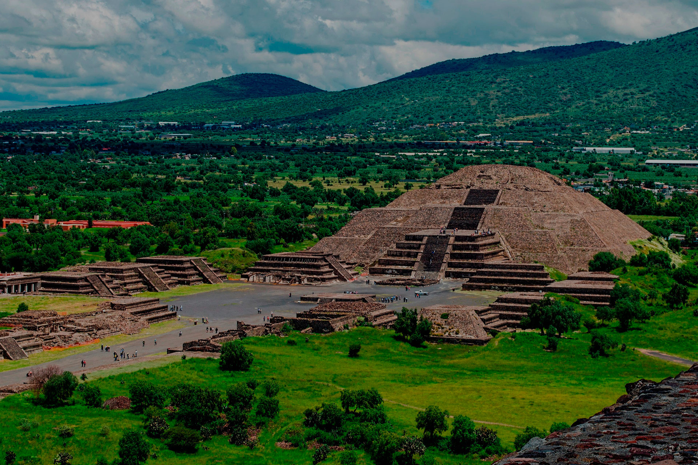 | Se puede subir a las pirámides de Teotihuacán, es una de las experiencias clave. Pero tienes que saber que la Pirámide de la Luna solo se puede subir hasta la mitad costos $80.00 pesos por persona (exija y conserve su boleto porque lo debe mostrar en los museos y demás puertas). Permiso para cámara de video: 45 pesos |
|---|
| Tonatico se encuentra muy arraigada a la llegada al pueblo de la imagen que hoy conocemos como Nuestra Señora de Tonatico, la cual tenía erigido un templo en «El Pueblo Viejo». Es a partir de la aparición milagrosa de la imagen de la Virgen en la ubicación actual del Santuario, que se le erige este nuevo templo en su honor en 1601 y que se concluye en 1650. Los pobladores tardaron 50 años en trasladarse alrededor del nuevo templo religioso, corazón de Tonatico hasta hoy. | 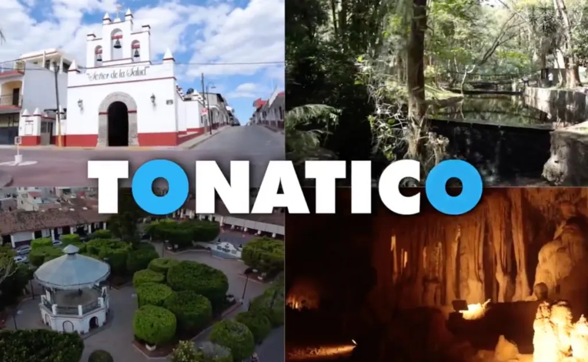 | Las Grutas de la Estrella. Tonatico es un destino único, sus bellezas naturales transportan a quien lo visita hasta las entrañas de la tierra, a través de su gruta de 500 mil años de edad, en un paseo de más de un kilómetro, con puentes iluminados y un recorrido a través del río subterráneo. La palanqueta elaborada con la receta de la Comunidad de San José los Amates, es única. La cestería es la artesanía municipal por excelencia, en especial la cestería en miniatura. CARACTERISTICAS -ardín Central y Santuario de Nuestra Señora de Tonatico. -Balneario Municipal. -Parque de Tzumpantitlán. -Parque y Campamento Niltze |
|---|
| Su clima es templado todo el año y está rodeado de hermosos paisajes boscosos que en sus cercanías también son el refugio invernal de la mariposa monarca. Su nombre original era Pameje, de origen mazahua, el cual cambió durante los primeros años de la Colonia cuando recibió el título de San Francisco del Valle de Temascaltepec, para que años después, durante la segunda mitad del siglo XIX, adoptara el sencillo nombre con que ahora lo conocemos en honor al general Nicolás Bravo. | 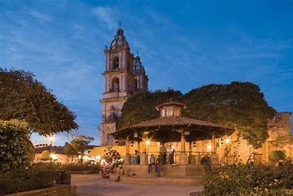 | ATRACTIVOS -Lago -Plaza principal -Parroquia de San Francisco de Asís -Santa María Ahuacatlán -Museo Arqueológico -Monte Alto -Spas y centros de meditación -Deportes terrestres Pareciera que la misión de Valle de Bravo fuera ponerte en contacto con los elementos naturales más primitivos. Su lago, como centro de vida, atrae por su inmensidad y belleza. El aire despierta el espíritu aventurero, de aquí son los mejores veleristas del país y se disfruta enormemente volar en parapente o ala delta para conocerlo todo desde arriba. La tierra es pródiga en belleza, con paisajes montañosos que quitan el aliento y verde por doquier. Y por último, el fuego que adormece los espíritus en chimeneas, fogatas y temazcales invita a renacer una y otra vez. |
|---|
| Si estás en búsqueda de un Pueblo Mágico con riquezas naturales y bella arquitectura, Villa del Carbón es tu opción. El destino está rodeado de bosques y cuenta con calles seductoras. Aquí te decimos qué puedes hacer y cómo llegar, así como todo lo que debes saber del destino El pueblo se caracteriza por mantener un estilo colonial. Es ideal para recorrer sus calles empedradas y admirar arquitectura antigua, así como para contemplar sus áreas verdes y presas. | 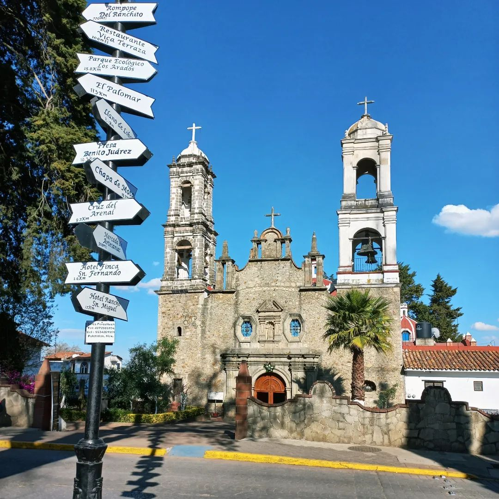 | Presa del Llano Enclavada entre montañas y bosques, la presa del Llano regala paisajes hermosos. Es un parque ecoturístico creado en 1982. Se puede realizar senderismo, tirolesas, paseos en lanchas de remos kayaks o paseos a caballo. Tiene renta de cabañas y área para acampa Alguna vez fue un pueblo, llamado San Luis de las Peras, pero el entonces presidente Lázaro Cárdenas decidió desalojar a los habitantes en 1934 para crear una presa y abastecer de agua al estado de Hidalgo. Los asentamientos quedaron sumergidos y en la actualidad sólo sobresalen las torres de sus iglesias. Hay hoteles, cabañas, restaurantes, zona de pesca, servicio de lanchas, kayak y remos, así como paseos en barco y yates Mercado de artesanías Ubicado en la colonia Centro, en el inmueble se podrán encontrar trabajos en bisutería, lana, piel, barro, cerámica, tejido, botines charros y objetos de palma, entre otros. Fue construido a finales de la década de 1980, previamente, sirvió como la escuela profesor "Silviano Enríquez" durante 50 años y, al mismo tiempo, se ocupaba para actividades recreativas o eventos públicos. |
|---|